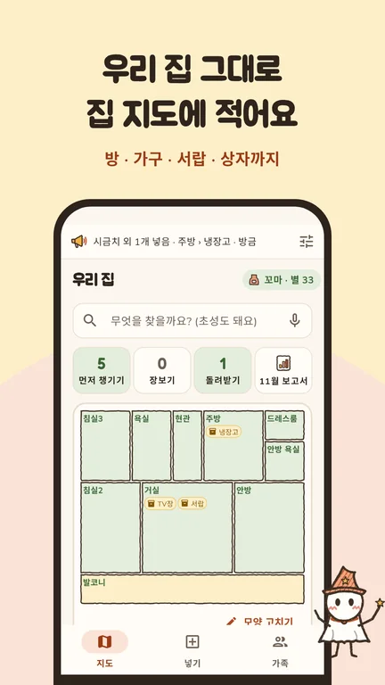
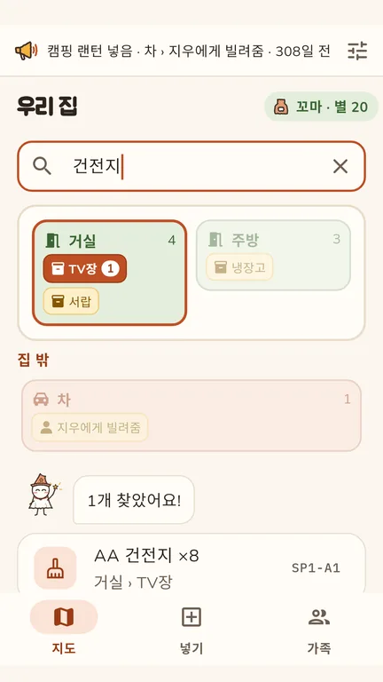
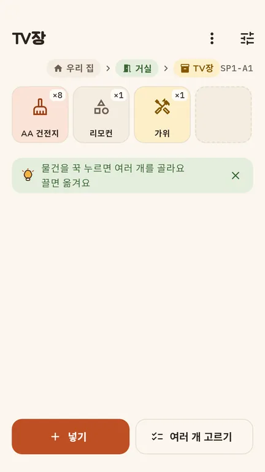
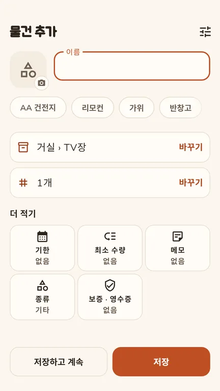
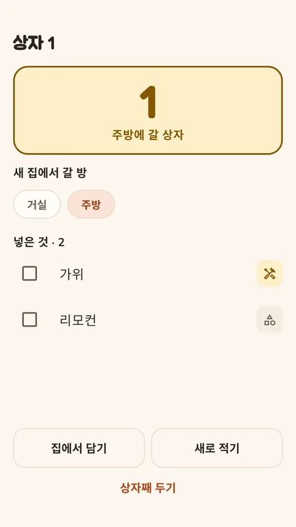
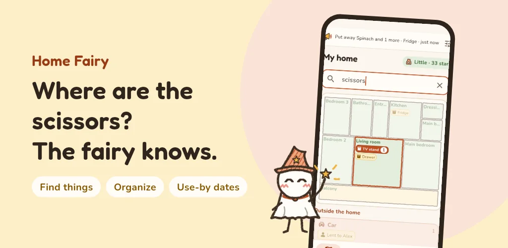
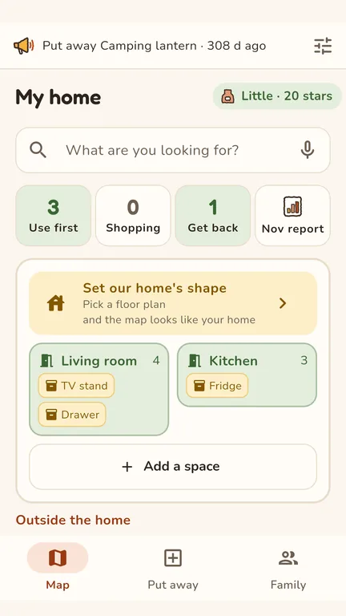
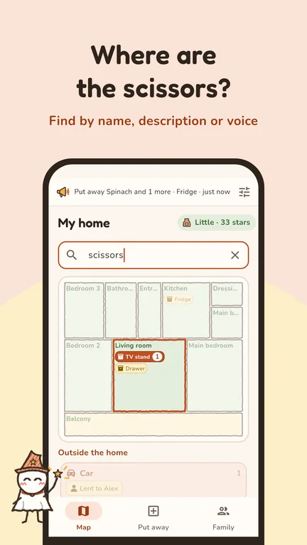
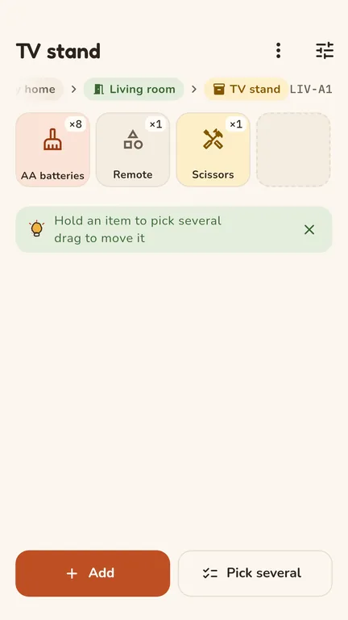
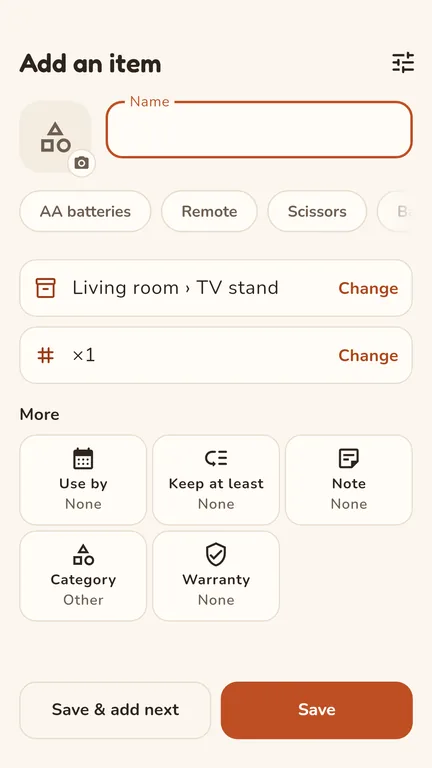

우리집요정
물건이 어디 있는지 집 지도에 적어 두고, 검색 한 번으로 찾아요.





집 지도
방 · 가구 · 서랍 · 상자를 우리 집 모양 그대로 적어요. 평면도를 고르면 지도가 실제 집처럼 보여요.
찾기
이름 · 초성 · 위치 코드로 바로 찾아요. "열 날 때 먹는 약"처럼 설명으로 물어도, 말로 물어도 돼요.
넣기 · 옮기기 · 사용
이름을 쓰면 아이콘과 종류가 저절로 붙어요. 사진 · 바코드 · 영수증으로 여러 개를 한 번에 넣을 수 있어요.
기한 · 장보기 · 돌려받기
기한이 다가오면 먼저 챙길 것을 알려 주고, 떨어진 것은 장보기에 담겨요. 빌려준 물건은 돌려받을 날을 기억해요.
뭐 해 먹지
냉장고에 있는 식품으로 만들 수 있는 요리를 공공 레시피에서 골라요. 만든 뒤에는 쓴 만큼만 빼요.
가족과 함께
초대 코드 하나로 가족이 같은 집을 보고 같이 정리해요.
이사 상자
상자마다 번호를 매겨 무엇을 넣었는지 적어 두고, 새 집에서 풀며 제자리를 정해요.
먼저 권하지 않는 앱
광고가 없고, 찾지 않은 물건을 먼저 권하지 않아요. 계정 없이 쓰면 모든 기록이 폰 안에만 있어요.
출처
- 레시피: 식품의약품안전처 식품안전나라 조리식품의 레시피 DB (COOKRCP01), 공공누리
- 식품 바코드: 식품의약품안전처 식품안전나라 바코드 연계제품 정보 (C005)
- 아이콘 일부: Pinhead · Temaki · Maki (CC0)
Home Fairy

Write down where things are on a map of your home, and find them with one search.




A map of your home
Rooms, furniture, drawers and boxes as they really are. Pick a floor plan and the map looks like your home.
Find
By name, by location code, or by description ("medicine for a fever"), typed or spoken.
Put away, move, use
Type a name and the icon and kind follow. Add many at once from a photo, a barcode or a receipt.
Dates, shopping, things lent
See what to use first, let what runs out go to the shopping list, and remember when lent things come back.
What to cook
Dishes from public recipes that use the food you have. After cooking, take out only what you used. Recipes are in Korean.
With family
One invite code, and the family sees and tidies the same home.
Moving boxes
Number each box, note what went in, and give things their new place as you unpack.
Quiet by design
No ads, and no suggestions you did not ask for. Without an account everything stays on your phone.
Sources: recipes and food barcodes from the Korean Ministry of Food and Drug Safety (FoodSafetyKorea, KOGL); some icons from Pinhead, Temaki and Maki (CC0). · Privacy policy · account deletion